Qui a vraiment une option de transport à 5 minutes de chez soi,
et où en ajouter pour toucher le plus de monde au moindre coût ?
Diagnostic France entière (DROM couverts par l'INSEE inclus) · Territoire prioritaire pour Citiz : la Métropole de Lyon · Strasbourg comme témoin
Nombre d'options de transport à 5 min de marche, du plus froid au plus chaud.
Chaque arrêt et station, et le nombre d'habitants qu'il dessert.
D'abord quel territoire pour Citiz, puis quelles stations, sous budget. Vélo et bus : une liste à part pour la collectivité.
des habitants (33,5 %) n'ont aucune option de transport à 5 minutes de marche de chez eux. Borne basse : sur le vrai réseau piéton, plutôt 38 %.
63,8 M d'habitants analysés. Métropole 34 %, Martinique 24 %, La Réunion 9 %.
Seuls 3,5 % des habitants ont une station Citiz à 5 min.
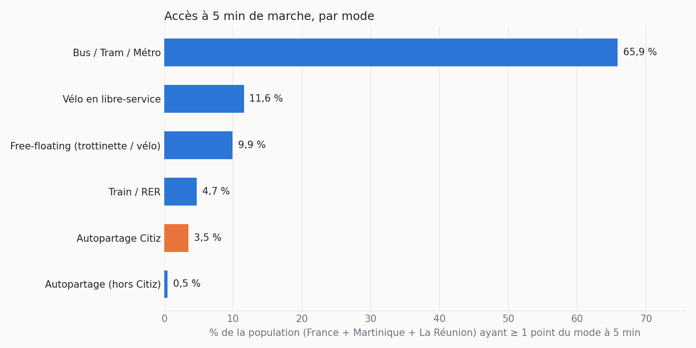
La Guadeloupe, la Guyane et Mayotte ne sont pas couvertes par les carreaux INSEE : on ne peut pas les cartographier à cette maille.
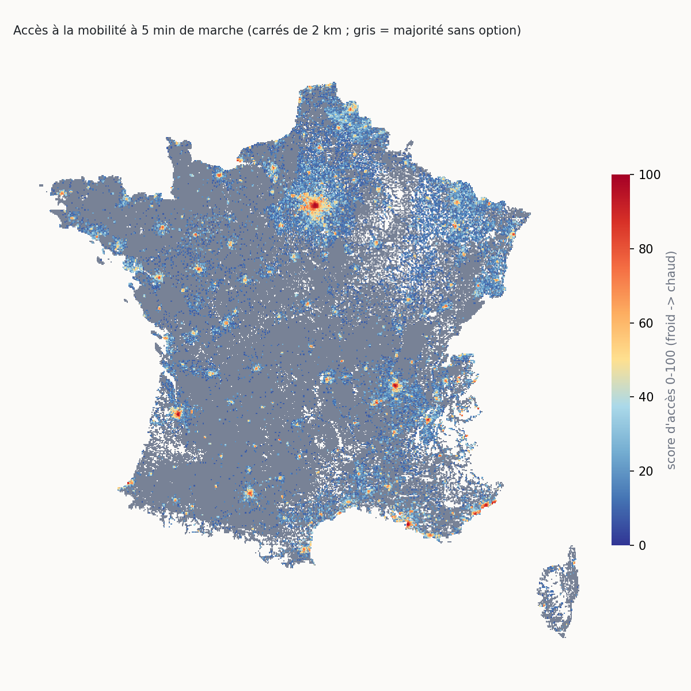
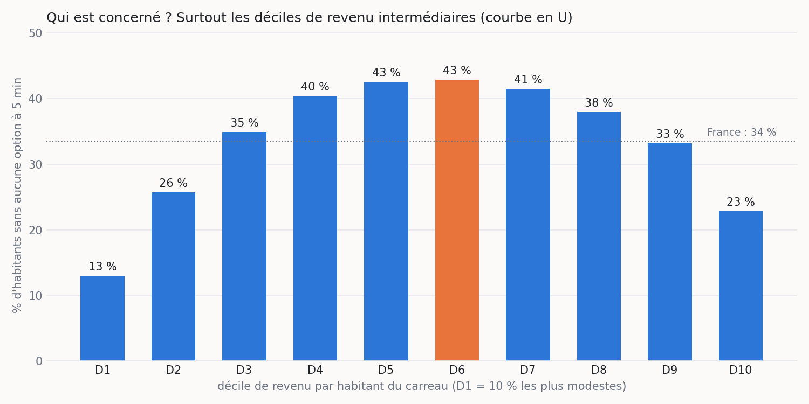
11 % sans option dans le 1er décile de revenu, 29 % dans le 6e, 18 % dans le 10e (carreaux d'au moins 11 ménages, revenu non imputé). Sur tous les carreaux, la bosse monte à 43 %, amplifiée par l'imputation INSEE des petits carreaux ruraux.
Conséquence : le revenu seul ne suffit pas à définir le besoin. On combine pauvreté, ménages sans voiture et faible accès actuel.
Chaque arrêt et station affiche aussi sa population desservie dans la démo. Médiane : 293 habitants pour un arrêt de bus, 1 750 pour une station Citiz.
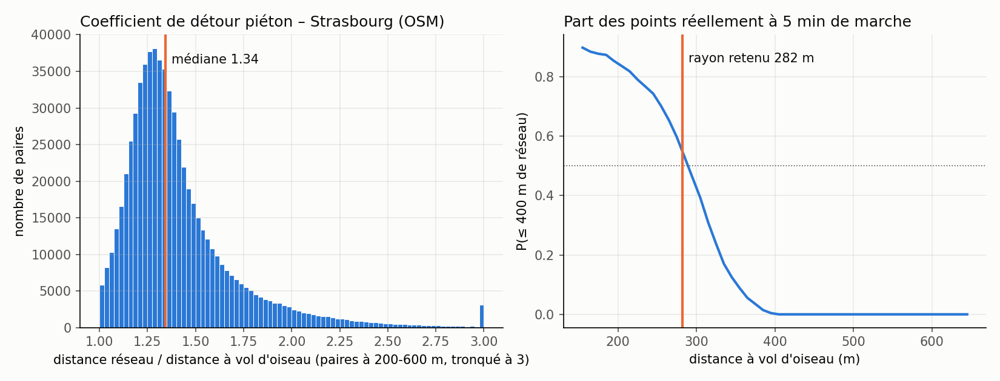
Graphe piéton OSM de Strasbourg (237 399 nœuds) et 400 origines tirées selon la population. Détour 1,42 (IC 95 % : 1,40–1,44).
| Rayon | Précision | Rappel | Biais |
|---|---|---|---|
| 282 m (retenu) | 0,92 | 0,99 | +5 % |
| 308 m (détour 1,3) | 0,91 | 0,99 | +24 % |
| 400 m naïf | 0,86 | 1,00 | +101 % |
Validation contre les vraies distances réseau de 1 000 arrêts et stations vers 2 398 carreaux. Un cercle de 400 m doublerait le nombre d'options comptées.
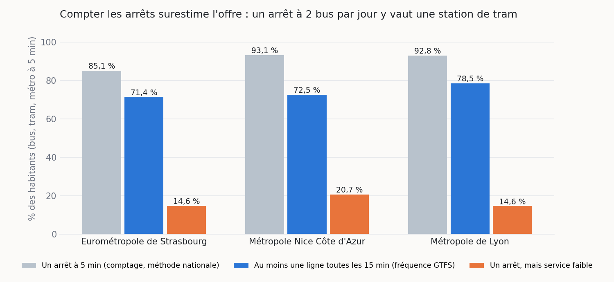
L'agrégat national n'a pas d'horaires. Dans nos zones d'étude, on lit les GTFS des réseaux (TCL, Lignes d'Azur, CTS et Fluo 67) un mardi hors vacances, de 7 h à 20 h.
Lyon : 93 % ont un arrêt, 78 % une option pleine, 14,6 % en service faible. Nice : 20,7 %. Strasbourg : 14,6 %.
| Type | Modèle | PR-AUC | Pop. seule |
|---|---|---|---|
| Citiz | boosting | 0,48 | 0,26 |
| Vélo | logistique | 0,64 | 0,53 |
| Bus | boosting | 0,75 | 0,71 |
Appris sur 80 départements où l'autopartage existe. Test sur Strasbourg, Bas-Rhin tenu hors de l'apprentissage : PR-AUC 0,67 contre 0,59 pour la population seule. Limite : il ne prédit pas le nombre de voitures par station, d'où la confrontation à l'usage réel (slide 9).
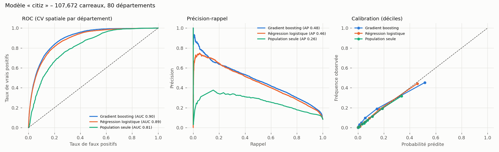
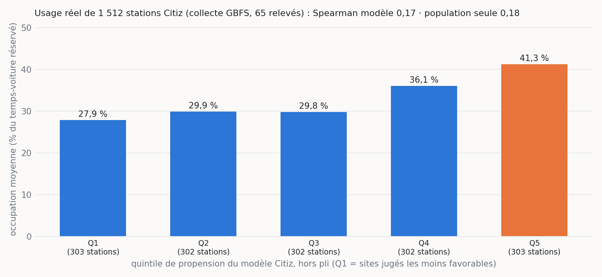
On relève les flux GBFS des 17 réseaux Citiz toutes les 5 min : la part du temps où les voitures sont réservées donne un taux d'occupation, pour 1 512 stations.
Limite assumée : station par station, le modèle ne fait pas mieux que la population seule (Spearman 0,17 contre 0,18, écart non significatif).
65 relevés sur 235 possibles en un jour, en partie pendant les vacances de la Toussaint ; sens de is_reserved à confirmer avec Citiz. Validation, pas apprentissage.
Garantie théorique : au moins (1 − 1/e)/2 de l'optimum. Testé contre la force brute : 97,3 % de l'optimum en moyenne, 88,4 % au pire.
Citiz ne gère que l'autopartage : 1 M€ Citiz pour ses stations, 1 M€ collectivité pour le vélo et le bus, deux listes séparées. Choix normatif réglable : 15 % de chaque budget réservés aux zones peu denses. Une enveloppe est un plafond : un site 5 fois moins rentable que le meilleur n'est pas acheté.
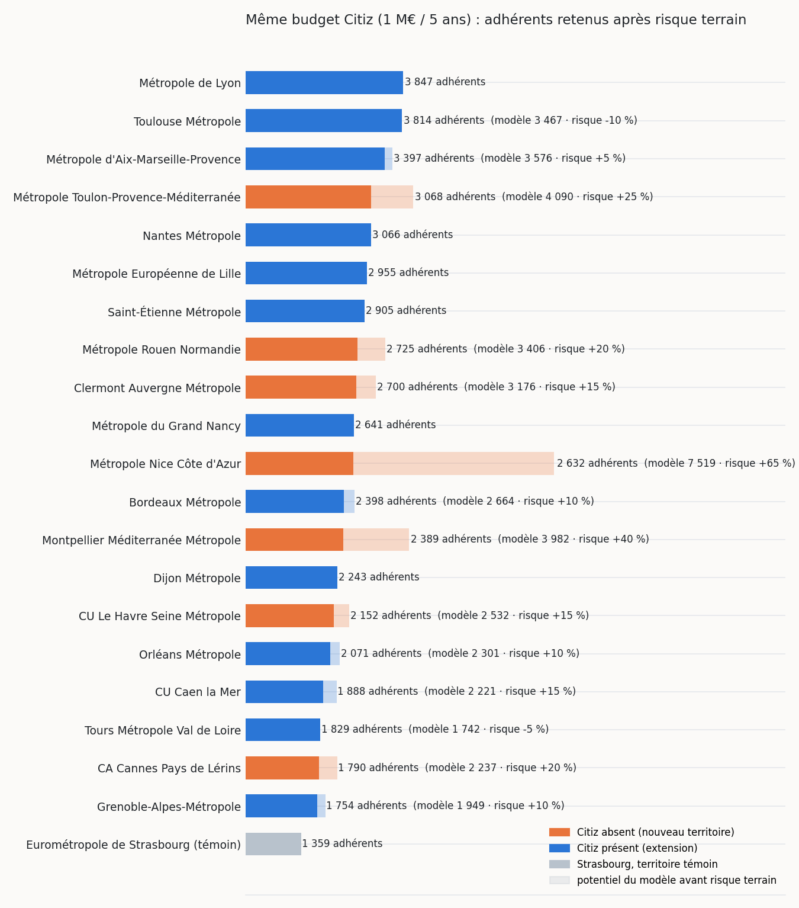
1. Criblage des 99 intercommunalités de plus de 100 000 habitants : habitants des quartiers denses sans autopartage à 5 min, pondérés par le modèle.
2. Simulation : sur les 20 premières, l'optimiseur place les stations que permet 1 M€.
3. Risque terrain : échecs passés, autopartage hors GBFS, soutien local. Nice (1ʳᵉ pour le modèle) a vu échouer Auto Bleue (2011-2018) puis Mobilize Share (2026) : 11ᵉ. Montpellier a déjà Modulauto. Lyon devance Toulouse de 0,9 % seulement : deux choix défendables.
Île-de-France exclue : son autopartage est presque absent des flux GBFS publics.
7 à Villeurbanne7 à LyonVernaisonGenay
Citiz densifie : ses nouveaux desservis ont déjà un bus, la voiture partagée remplace la 2ᵉ voiture. La collectivité équipe la périphérie : 16 stations vélo (Vaulx-en-Velin, Saint-Priest, Givors…), 46 869 nouveaux desservis pour 0,96 M€, dont 85 % de ménages modestes. Aucun arrêt de bus : à nos coûts, il dépasse 200 k€ pour quelques centaines d'habitants. Stations Citiz à coordonner avec Citiz LPA.
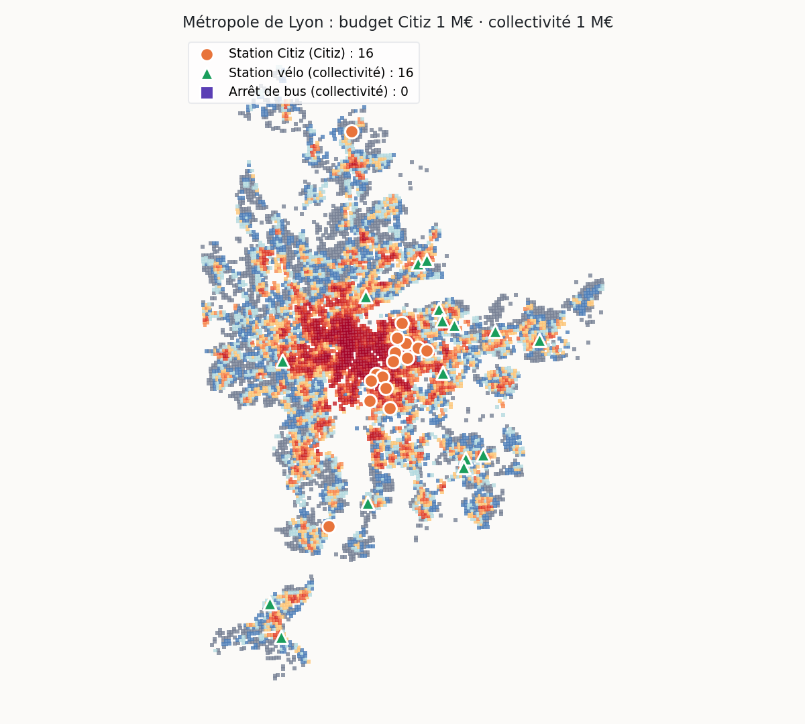
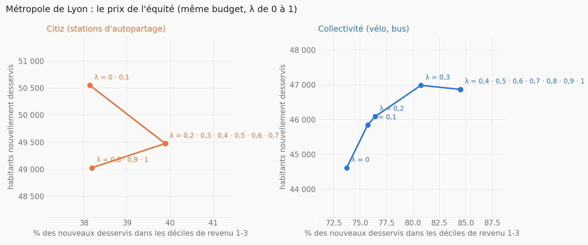
Chaque point est une optimisation complète avec la même enveloppe. Collectivité : de λ = 0 à λ = 1, la part des ménages modestes parmi les nouveaux desservis passe de 74 % à 85 %, et le nombre d'habitants augmente (44 616 → 46 869). Citiz : de 38 % à 40 % au mieux, pour 2 % d'habitants en moins.
Dans la démo, chaque mouvement de curseur relance l'optimisation en ≈ 1 s (territoire préparé une fois, seul le glouton est relancé).
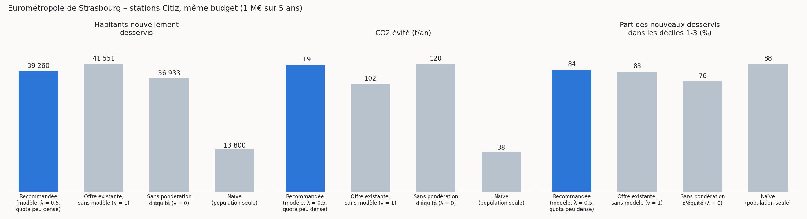
Même budget Citiz à Strasbourg. La stratégie naïve place les stations là où il y a le plus d'habitants, sans regarder l'existant : 13 800 nouveaux desservis contre 39 260 (à Lyon : 15 493 contre 49 477). Le modèle, lui, est un arbitrage : 6 % d'habitants en moins que sans modèle (41 551), mais +17 % de CO2 évité (119 t contre 102 t) ; à Lyon −19 % d'habitants pour +67 % de CO2, car il vise les sites où l'usage attendu est plus fort.
Un classement national des territoires, simulé à budget égal. Corrigé du risque terrain : Lyon en tête, au coude-à-coude avec Toulouse, devant Aix-Marseille ; Nice écartée après deux échecs. Strasbourg sert de témoin.
16 stations nommées et localisées, à 5 min de 49 477 habitants. Chaque site est justifié par les habitants gagnés, la valeur du modèle, le coût et le CO2.
La demande estimée justifierait ≈ 6 véhicules par station en moyenne, jusqu'à 8 (borne haute, pénétration nationale Citiz). Elle est à confirmer par un pilote : 1-2 voitures, puis suivre l'occupation. Aujourd'hui, 303 stations Citiz sont saturées : une 2e voiture y passe avant une nouvelle station.
--area epci:<siren> ou --dep 54 relance l'analyse en quelques secondes, sur n'importe quel territoire.
CO2 calculé site par site avec des hypothèses prudentes (ADEME) : 50 % d'adhérents actifs, 1 500 km évités par an. Le détour des bus est retranché : un arrêt peut avoir un bilan négatif, et on l'affiche.
Un carreau déjà desservi par un équipement ne compte pas pour ce type, 15 % du budget est réservé au peu dense et le besoin social est pondéré par λ. On publie toujours la comparaison avec l'efficacité pure.
On parle d'« offre à développer », jamais de quartier « mal desservi ». Le classement des territoires mesure un potentiel pour Citiz, pas un retard, et il n'y a aucun palmarès de communes.
Aucune statistique sociale sous 11 ménages (seuil INSEE). Seuls 23 % des carreaux l'atteignent seuls : les autres sont agrégés à la maille d'affichage ou masqués. La collecte GBFS ne garde que des totaux par station, jamais de position de voiture.
Chaque limite est documentée dans les docstrings des modules de src/.
python -m streamlit run app.py (Windows : .venv\Scripts\python -m streamlit run app.py)
src/ (même code), tables Delta dans le Lakehouse, rapport Power BI avec les curseurs budget et λ (grille de 12 100 scénarios précalculée). Suite : MLflow et collecte GBFS planifiée dans Fabric.Code, sources (SOURCES.md) et guide de reprise (README.md) sont dans le dépôt.